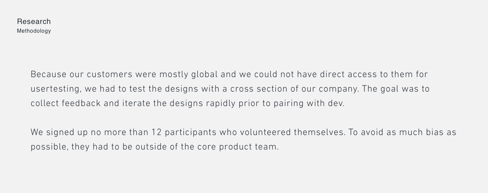

The Magic of BoxHop
BoxHop helps customers reap the benefits of local shopping through the use of a domestic shipping address which unlocks discounts accessible only to US based customers. Beyond the discounts, customers also save on shipping through consolidation. BoxHop ships bulk through major carriers and the savings are passed on to customers.
The Problem
What we were hearing consistently from the customer support team was that they were receiving a lot of calls to troubleshoot resolving parcels that had issues which could have been resolved online through our resolution portal. Through their support logs, we learned the resolution user interface could be improved. We confirmed this by running a survey which showed almost 45% of users did not know we had these tools.
Our hypothesis was that the user interface for the resolution flow was too complicated for international customers. Not only was the page in English, but the amount of data held on the page deserved a better information architecture and a simpler user experience. We conducted an audit of the user experience and found many problematic areas for us to solve.
Research
We conducted research to learn more about the experience first hand.

The results were not too surprising. We knew the issues the design held, but the research validated the problem and we felt comfortable moving to the design phase.
An AH-HA Moment
During our last round of research, we stumbled upon a breakthrough. One of our participants suggested we decouple the list of parcels into two; one for parcels with problems and one for those ready to ship. The user's rationale was that shopping American goods seemed like emotionally posiitve experience potentially for foreign customers. Afterall, American goods were hard to come by. We went to our customer research team and found data supporting this argument. For instance, we noticed accounts with an average number of shipped orders (considered tier 1 customers) had no fewer parcels needing resolution, than those considered average tier 2 customers. Problematic parcels might even be getting in the way of customers completing new orders.
It made sense after we evaluated the checkout experience in real world commerce. We separated the task flow with tabs that focused on different purpose for the customer. This mimicry of the real world experience where customers are never in one queue to checkout or receive customer support was an incrediblle breakthrough.A simple redesign was considered a low cost effort that might help our bottom line. A decision was made to test the new design with a small group of users.
Design
With the research completed, we proceeded to the design phase armed with the information we had. The designs needed to be simple, useful, but also advance the user towards shipment.

We felt comfortable launching with option 2. It didn’t include as much rework for engineers and only involved front end updates. The APIs remained the same, and there was no additional logic to be created.
The Results
After the launch of the redesign to a small group of users, we noticed an increase in order completion and a slight improvement in parcel resolution metrics. While the design hadn't solved for all of our users' problem, we knew we had provided them with a better checkout experience that met the company's business needs as well. BoxHop continues to evolve the checkout experience and we look forward to iterating the parcel resolution so that it meets our customer's needs.